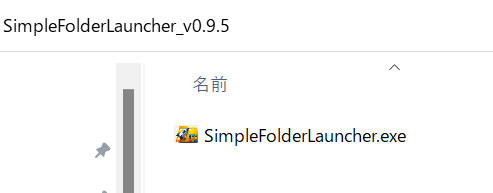

Documentation
Quick Start
2. Extract
Extract the downloaded zip file to any location. This folder will act as the root for your launcher shortcuts.
3. Run the EXE
Run SimpleFolderLauncher.exe. It will reside in your system tray.

4. Set Path
Right-click the app icon in the tray and click "Settings".
Specify the path to the folder you want to display in the launcher.
Once saved, this path will be displayed whenever you open the launcher. (Settings are saved in config.ini).
※ If necessary, please change the language (Japanese / English), text size, or hotkey-related settings.

5. Launching
You can launch the application with double Shift (the key type and number of presses can be changed in the settings) or with Ctrl + Shift + I.

Controls (Option 1)
- Press 0-9 or A-Z shortcuts displayed on screen for instant launch.
Controls (Option 2)
- ↑ ↓ keys: Navigate items
- Enter: Execute/Open
Keyword Search
- Filter through items instantly using keyword search.

Other Features
- Right-click an item to copy its path.
- Press
Escto close the launcher. - Adjust font size in settings.
How to Update
To update, download the new version and overwrite the files in your existing folder.
- 1. Close SimpleFolderLauncher.
- 2. Download the new zip file.
- 3. Overwrite files in the existing folder.
- 4. Restart the app.
Misc
- We recommend adding the app to your Windows Startup to ensure it's always available.
- If using an external keyboard, ensure NumLock is ON for number pad input.
- Pressing Shift 5 times rapidly may trigger the Windows Sticky Keys dialog. This is a standard Windows feature, not a bug in the app.